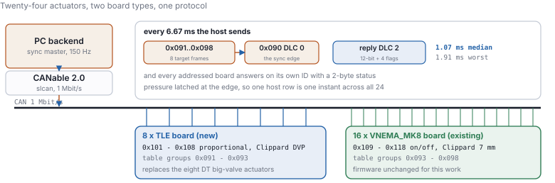
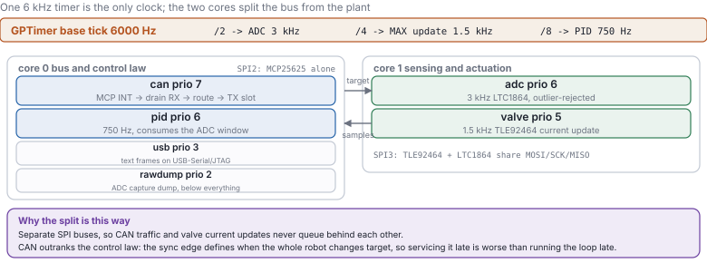
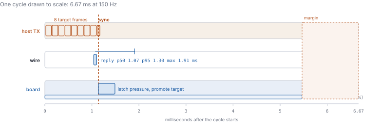
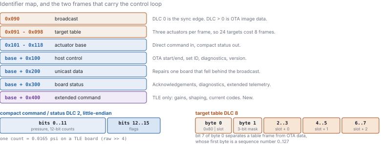
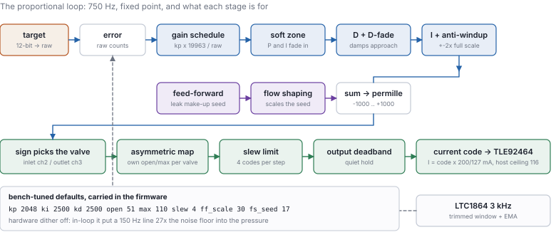
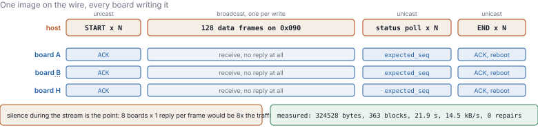

Firmware architecture, protocol and control law for the TLE board in a mixed 24-actuator system
Summary. A robot arm runs 24 pneumatic actuators from one CAN bus at 150 Hz. Its top eight actuators are being replaced with a proportional-valve manifold on a new board, while the lower sixteen keep their original on/off boards. The two must share a wire, a host and a synchronisation edge. The work reported here adds an old-protocol-compatible layer to the new board's firmware, alongside the richer command set the proportional controller needs, and a broadcast firmware-update path that flashes every board on the bus from one stream. Measured on hardware: 3000 of 3000 sync edges answered over 20 s, reply latency 1.07 ms median and 1.91 ms worst, host cycle jitter 0.001 ms at the 95th percentile, and a 324 kB image broadcast in 21.9 s with no retransmission. Three defects were found and fixed on the way, all of them already present in the firmware and latent because no path had exercised it on a live bus.
The existing system is a solved one: sixteen boards driving 7 mm on/off valves, eight driving larger DT valves, all answering a PC backend that owns a 150 Hz cycle. Replacing the top eight with proportional control does not get to renegotiate any of it. So the protocol is not a design choice here; it is a constraint, reproduced byte for byte.
What is a choice is where to put everything a proportional board has to say that will
not fit in a two-byte frame. It goes to an identifier of its own,
base + 0x400, which no old board listens to and no part of the old protocol
uses.

Everything hangs off one 6 kHz timer. The sampler, the control law and the valve update must hold a fixed phase relationship, and three free-running timers would drift apart; dividing one tick makes that impossible by construction, and the divisors are checked at compile time.
The cores split along the two SPI buses, which on this board are physically separate. That is what makes the split worth having: a burst of CAN frames cannot delay a valve update, and a slow ADC transaction cannot delay the sync edge.

A board does nothing with a target when it arrives. Commands are staged; the sync edge promotes them, and in the same handler the board latches its filtered pressure. That latched value is what the reply carries, deliberately decoupled from when the reply is transmitted, so replies arriving at different times still describe one instant.
Nothing staggers the replies. Every addressed board answers at once and CAN arbitration sorts them out, ordering them by identifier: on the reference 24-board system that spread ran from 2.04 ms at 0x101 to 3.49 ms at 0x118, about 65 µs per identifier step. The one-board figure below should be added to that spread, not compared with it.

in_waiting instead moved the median from
3.31 ms to 1.07 ms.
Pressure on the wire is a 12-bit field, which is what the original 12-bit ADC boards report directly. This board's sensor path is 16-bit, so the compact value is the raw reading shifted right by four: one count is 0.0165 psi, finer than the old boards' resolution and about a third of this controller's default deadband. Absolute pressure still comes from the host's per-actuator calibration, as it does for the old boards — a replacement actuator needs recalibrating anyway, since sensor and plumbing both change.

base + 0x400 is new. Over USB, where nothing
is shared, the new command set keeps its original identifier so every existing bench tool still
works.Bitrate is a property of the wire, not a per-board choice, and the sixteen existing boards are built for 1 Mbit/s. The load calculation agrees on the merits: at 500 kbit/s the worst case leaves no room for retransmission, diagnostics or an update running alongside.
| Bus load per 150 Hz cycle | 1 Mbit/s | 500 kbit/s | Verdict |
|---|---|---|---|
| 24 boards (8 table frames + 1 sync + 24 replies) | 37–44 % | 73–89 % | 1 Mbit/s required |
| 8 TLE boards alone | 13–16 % | 27–32 % | either works |
The proportional loop runs at 750 Hz in fixed point, from a trimmed window of the four 3 kHz samples taken since the last step. Every stage exists because of a measured behaviour of this plant: the gain schedule divides by measured pressure because loop gain rises with it; the soft zone fades P and I in near the target so a high proportional gain can hold the valve open through a slew without turning the hold into a limit cycle; the derivative damps the approach and fades inside the capture band so sensor noise does not become valve motion; the feed-forward seed exists because this bladder leaks 2–3 psi/s and the integral would otherwise rediscover that on every step.

The image is broadcast once and every selected board writes it; only start, progress poll and finish are addressed individually. Boards stay silent through the stream — eight of them acknowledging every frame would put eight frames on the bus for each one the host sends. Progress is read back at each 896-byte block boundary, and a board that fell behind is topped up over its own unicast identifier before the next block starts.

| Quantity | Result | Conditions |
|---|---|---|
| Sync edges answered | 3000 / 3000 | 20 s at 150 Hz, one board |
| Reply latency, median / p95 / max | 1.07 / 1.30 / 1.91 ms | 1500 cycles |
| Host cycle jitter, p95 / max | 0.001 / 0.016 ms | headless; 0.009 / 5.0 ms with the GUI plotting |
| Broadcast update | 324 kB in 21.9 s | 14.5 kB/s, 363 blocks, 0 repairs |
| Receive-buffer overflows / transmit failures | 0 / 0 | board's own counters, whole session |
| Identifier across USB flash and update | unchanged | verified after both |
| Bench checks passing | 28 / 28 | tools/tle_bench.py all |
| Defect | Why it mattered | Fix |
|---|---|---|
MCP2515 RXnOVR never cleared |
The flags latch. An overrun buffer keeps rejecting frames until software clears it, silently — the controller goes on acknowledging those frames in hardware, so the transmitter sees success while the board hears nothing. | Cleared on an unconditional 100 ms sweep. Recovery must never be gated on a condition the fault itself removes. |
| One-shot transmission enabled | Added as a defence against a bus-less bench. On a populated bus every board answers the sync edge at the same instant, so losing arbitration is routine, and a one-shot transmitter drops the frame rather than retrying. Only the lowest-identifier board would have reported reliably. | Off. The bus-less case is left to the link breaker, which was written around retry-forever semantics anyway. |
| Acknowledgement lost to a reboot | Replies are queued and drained at the end of the CAN task's pass, but a reboot runs inside the receive handler, so the task never reaches its transmit slot. An update that completed correctly on the board reported failure to the host. | Both reboot paths — finishing an update, setting an identifier — flush the queue before restarting. |
The original firmware has no link-loss timeout: a board that stops hearing the host holds its last commanded pressure indefinitely. The new boards drop their outputs after 500 ms without a sync edge — 75 missed cycles, which no healthy host produces. Expect the eight new boards to release and the sixteen old ones to hold.
Firmware is the repository root project, host code is under TLE_PCB/, and every
figure comes from docs/make_figures.py.
idf.py build, then idf.py -p COM8 flashtools/tle_bench.py all --image … — the 28 checks aboveVEMA_TLE_flash.py, VEMA_TLE_controller.py